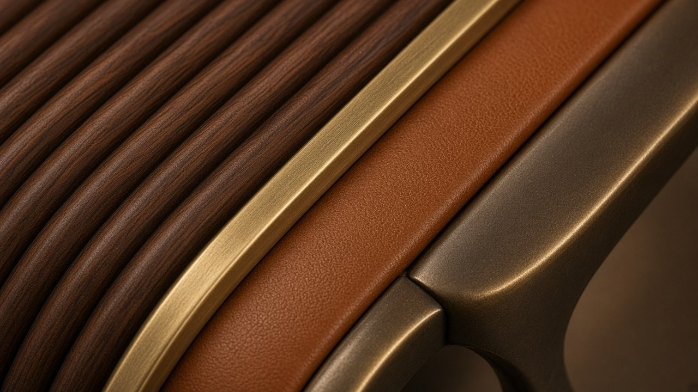

x.classList.remove('on'));this.classList.add('on')">← Coleção
N.º 09 · Coleção Meridiano
PAIVA
Secretária executiva compacta
Um volume em nogueira canelada nas quatro faces, pousado em pernas-lâmina de bronze.
Preço desde 14.500 €sem IVA · valor indicativo · versões por medida sob consulta
Descarregar ficha técnica (PDF)
Dimensões
| L × P × A | 1800 × 850 × 750 mm |
| Superfície de escrita | 1500 × 600 mm |
| Altura útil | 710 mm |
Materiais
| Tampo | Nogueira americana |
| Pele | Plena flor semi-anilina Conhaque |
| Pernas | Bronze |
| Metais | Latão e bronze escovados |